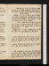
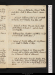
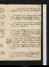
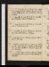
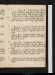
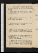
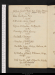
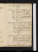

- About
- Diary
- People
- Events
- Reading
- Writing
- Meals
- Meetings
- Search

Jan. 1. 1796. F.Hume, p. 131: Calonne, p. 42: Cymbeline, acts 3 & 4. Dine at King's, w. Franco's, Dr Howard & A B: meet mrs Mackintosh.
2. Sa.Hume, p. 200: Calonne, p. 64: Cymbeline, act. 5. Sup at Nicholson's, talk of passions.
Jan. 3. Su.Hume, p. 231: Calonne, p. 96. Sm. breakfasts: dine at Hts, w. Foulkes's, Hutchinson, E M & E P C; adv. Powel & Russel.
4. M.K John, act 1. Breakfast w Carlisle: call on Lawrence, na, Moore n, Mackintosh n, Dealtry n, Wolcot, & Crisp na: dine at Opie's, w Taylor & Dyer: sup at Reveley's.
5. Tu.Hume, p. 310, fin: K John, acts 2, 3, 4. J G calls: Fenwick at tea: Philomaths, drama.
6. W.Hume's Essays, Vol. II, p. 168-196: K Jn, act 5. Dine at King's, w Fenwick & A B.
7. Th.Hume, p. 234: Calonne, p. 120: Richard 2, act 1. Sup at Batty's. Thelwal's Preface; answer. Dyson & White call.
8. F.Hume, p. 258: Calonne, p. 126. C dines: tea miss Hayes's, w. Ht & Wolstencraft. Richard 2, act 2. Tuthil calls.
9. Sa.Hume, p. 284: Calonne, p. 146: Richard 2, act 3. Tuthil & Wedgwood call; M & Dyson at tea.
Jan. 10. Su.Hume, p. 290. Smith breakfasts: M Moore, M, C & Allen call; talk of anatomy & theatre: dine at Hts, w. Tuthil; adv. mrs & miss Banks. meet Russel.
11. M.Call on Robinson, Lister, Davis, Montagu na, Inchbald adv Robinson & Ht adv Merry: dine at King's, w. A B, Belzunce & Brook. meet Russel. 40
12. Tu.Hume, p. 307. Allen, Stodart, J Hollis & Otton call; talk of education, volition, matter & duplicity: dine at Robinson's, w Inchbald, Merry, Chalmers, Ht & C: Ph. supper; adv. Merry
13. W.Hume, p. 361, fin: Calonne, p. 170. Tea Montagu's, w. Wrangham.
14. Th.Hume's Essays, Vol. II, p. 35. Dyson calls: call on Mackintosh, Kentish nah & miss Hayes: Dine at Newton's, w. Wolstencraft, mrs Christie, Smith, Bell, Croke, Lovel, Bateman, Dalby & Blackburnes; adv. Bristow, Wybourne & Incledon.
15. F.Hume, p. 42: Richard 2, acts 4 & 5. Call on J Hollis: C dine[s?]: Dyson & Kearsley at tea; talk of Shakespear.
16. Sa.Hume, p. 54. M, C & Stoddart call: meet dr Moore: dine at King's: tea Carlisle's, w. Allens, Alexander, Shee, Carr, Crichton, Duppa, Sloper & Turner.
Jan. 17. Su.Henry 4, I, act 1. Smith breakfasts: Stoddart calls: call on Mackintosh: dine at Hts, w. Merry, EM & T; adv. Ritson.
18. M.Henry 4, I, act 2. Fenwick calls: sup at miss G's.
19. Tu.Henry 4, I, acts 3, 4, 5; II, acts 1, 2: Rabelais, p. 10. Call on Fenwick: Philomaths, drama. miss M G calls.
20. W.Write 3 pages. Henry 4, II, acts 3, 4. Call on Inchbald: tea Hayes's, w. Draper & Brown: meet Lewis cg . [Letter from Westley
21. Th.Write p. 4, 5, 6/2. Hume, p. 56: Henry 4, II, act 5; Henry 5, acts 1, 2, 3. Call on Dan Lister n: sup at Carr's, w. Carlisle, Shee & Littledale.
22. F.Write p. 6/2, 7, 8, 9. Hume, p. 65: Henry 5, act 4. Wedgwood calls: meet Banks & Frend: dine at King's, w A B & Steele: theatre, Harlequin Captivee.
23. Sa.Hume, p. 100: Henry 5, act 5. Ht & Fawcet call. Theatre, Man of Ten Thousand; adv. J G Jones, Stoddart & Armstronge: sup at Ht's.
Jan. 24. Su.Merry Wives, acts 1 & 2 . Smith breakfasts: Stoddart calls: dine at Ht's, w. Merry, T, & A Mercier; adv. Nicholsons, Pinard & H Richter
25. M.Write p. 10. Hume, p. 113: Wolstencraft's Travels, p. 78. Fawcet dines: Theatre, How to Get Married & Merry Sherwoode.
26. Tu.Hume: Wolstencraft, p. 178. Dyson at tea: Philomaths, gratitude.
27. W.Write p. 11. Hume: Wolstencraft, p. 197. Fenwick & C call: dine at King's, w. A B, Merry, Este & Macdonnel: meet Newton & Barnes.
28. Th.Hume: Wolstencraft, p. 232. Call on Northcote, w. Smith & Jamieson; talk of expression & players, Johnson, Raffael & Garrick, see Rembt & Titiane: Stoddart & Allen dine; talk of matrimony & Burke.
29. F.Write p. 12, 13. Hume: Dyson, Otton & Kentish call: dine at Reveley's, w. Etons: sup at Foulkes's, w. Hovels, Hutchinson & Cooke.
30. Sa.Breakfast at Lawrence's: call on King, & Inchbald, adv. R Twiss, Beck & miss Cooper: dine at Ht's, w. T. & mrs Cole: sup at Nicholson's.
Jan. 31. Su.Smith breakfasts: dine at Tooke's, w. Vaughan, Bonneys, Brockbank, Perkins & White: sup at Perry's, w. Porson & miss Grant.
Feb. 1. M.Write to mrs Sothren & a ma mère: J & Harr G, & M call: Fenwick & C dine: call on Montagu n, Carr & miss Hayes.
2. Tu.Write to M Hayes. Hume. Dine at King's, w. A B, Rogers & Lovel: Philomaths, ballot.
3. W.Hartley à Priestley, p. 14: Wolstencraft, p. 264, fin. Twiss & M call: theatre, the Country Girl; adv. Hts & mrs Cowleye: sup at Ht's. Geo. Cavendish,&c
4. Th.Write p. 14, 15, 16. Hartley, p. 23. Dine at Foulkes's, w. Hts, Hovels, Hutchinson & Cooke: theatre, 1/2 Pante; adv. Halle.
5. F.Write p. 17, 18 19/2. Hartley, p. 42: Mably sur les Romains, p. 16. Tea at Montagu's, w. Pinnick: call on Batty & Carr , nah.
6. Sa.Write p. 19/2, 20, 21, 22/2. Hartley, p. 60: Mably, p. 42: Merry Wives, acts 3 & 4. Matthews & Fenwick call: dine at Lauderdale's. Award, K. v. P., affirmede.

Feb. 7. Su.Smith breakfasts: call on Twiss: dine at Hts, w. mrs C & T; adv. H Richter & C. Dyson calls.
8. M.Write p. 22/2, 23, 24. Twiss, pp. 172: Horsley to the Magdalens, pp. 20: Merry Wives, act 5. C dines: evg Hayes's; adv. de la Serrier.
9. Tu.Write p. 24, 25/2. Hartley; p. 80. Meet Iliff: call on Dan Lister: tea mrs Robinson's, w. Twiss & Tarleton.
10. W.Write p. 25/2, 26. Young's Travels, p. 8. Reveley calls: dine at Reveley's: call on Inchbald: sup at mrs Robinson's, w. Tn, Merry & Columbine.
11. Th.Write p. 27-31. Young, p. 32. Dealtry, Hastings & Otton call: dine at Lauderdale's, w. Fox, Grey, Francis, Adam, Courtenay, col. Barry & O'Byrne; adv. Tierney.
12. F.Write p. 31. Young, p. 40. Iliff & Wedgwood call: call on Montagu: tea King's; adv. Davis: meet Newton & Barnes.
13. Sa.Angelina, p. 60. Call on Wolstencraft, nah: meet mrs Christie: Fenwick cal dines; adv. Otton: tea miss Mansel's; adv. Reynolds, C & Merry: theatre, 1/2 Isabellae.

Feb. 14. Su.Write p. 32, 33. Smith breakfasts: call on Crisp: dine at Hts, w. Merry, T, mrs Cole, miss Tucker, miss Deval & mr Spurling.
15. M.Yorke's Trial, p. 72. Ireland's, w. Merry: call on Opie, Northcote n, Banks n, A H n, & Smirke: Otton calls: dine at Wedgwood's: sup at Warren's, w. Bewgo & Smith: meet Johnson & J Bannister.
16. Tu.Write p. 34, 35/2. Groenvelt, p. 24: Yorke, p. 102: Angelina, p. 90. Call on Kearsley: dine at Lauderdale's, w. Grey, Fitzpatrick, W Smith, Tierney, Morgan & Peach; talk of luxury.
17. W.Write p. 35/2, 36. Hartley, p. 104: Live to Mend, acts 1, 2, 3. Ht calls: call on Kear Bonney; adv. Tooke{:}Lawrence na: meet Moore; dine at King's, w. O'Ryan & Macarthy: sup at mrs Robinson's, w. C: adv. col. Ackland. Macpherson dies.
18. Th.Live to Mend, acts 4 & 5; iterum: Angelina, p. 116. Crisp & Ht call: tea Foulkes's.
19. F.Write p. 37. Hartley, p. 122: Young, p. 50: Groenvelt, p. 72. Tea miss Mansel's: sup at Carr's, w. Bell & Aikin junr. J G calls.
20. Sa.Write to Stoddart. Hartley, p. 132. Twiss, M & Dyson call: tea miss Mansel's, the w. Reynolds: theatre, Lock & Keye.

Feb. 21. Su.Hartley, p. 148: Morgan, pp. 45: Polignac, pp. 62: Angelina, p. 196. Jno G calls: dine at Hts: w. mrs C, T & E M; adv. Ritson.
22. M.Write p. 38. Hartley, p. 157: Groenvelt, p. 121. Dine at Dan Lister's: evg Hayes's.
23. Tu.Write p. 39, 40, 41/2. Call on Lauderdale n; & Inchbald ; adv. Mattocks, C Kemble & H Siddons: tea Montagu's: call on Davis n, J Robinson & Tiffin: Philomaths, property. Groenvelt, p. 177.
24. W.Groenvelt, p. 226: Burke's Letter, pp. 80: Angelina, p. 263. Call on J G: tea Reveley's, & R Johnson's , w. Courtenay's.
25. Th.Write p. 41/2, 42. Groenvelt, p. 265. Dyson calls: dine at Foulkes's; adv. mrs Wood & Williams: theatre, Shepherdess of Cheapside, Pannel & HCe: sup at mrs Robinson's, w. C.
26. F.Write p. 43-47. Groenvelt, p. 317. Otton calls: C dines: tea Twiss's: sup at Nicholson's, talk of taxation.
27. Sa.Write p. 47-52/2. Groenvelt, p. 344. Batty calls: theatre, Plain Dealer, w. mrs R. & Ce.
Feb. 28. Su.Write p. 58/2, 53, 54, 55/2. Calonne, Lettre au Roi, p. 10. Smith breakfasts: J, Jo & Jno G call: dine at Ht's, w. Cole's: call, w. Ht, on Hayes. Frost, 10 days.
29. M.Write p. 55/2, 56, 57. Call on Jo G, & Northcote, talk of Shakespear & Burke: dine at R Johnson's, w. Mackintosh; adv. Courtenay: sup at mrs Robinson's, w. C & mrs Parsons.
Mar. 1. Tu.Call on Mackintosh (adv S Parr) Smith, E Mansel, C, Jones, Moore, Ja & C Moore, Lauderdale n, & Inchbald: dine at King's, w. Este & Gordon. Twiss n.
2. W.Write p. 58-63. Life of Brissot, pp. 94. Otton calls: tea miss Mansel's, w. Reynolds.
3. Th.N A R: Hermsprong, Vol. I. Dine at col Barry, w. O'Connor, Byrne, Weld & Ht; talk of God & matter: call on mrs Robinson n.
4. F.Revise. Hermsprong, Vol. II, p. 116. C & Jones dine: sup at mrs Robinson's, w. C.
5. Sa.Call on Robinson, Parr (adv. Ht, Street, &c), Davison, Johnson, Hayes, Montagu (adv. Butler), & Davis: dine at Mackintosh's, w. Parr, Courtenay, Moore, Parkes & S P: sup at Foulkes's.
Mar. 6. Su.Smith & Fell breakfast: Dyson calls: call on Inchbald & Burdet, w. Barry: meet Mre: dine at Ht's, w. Coles & Spurling. Snow.
7. M.O'Connor's Speech, pp. 32: Hermsprong, p. 242: Vol. III, p. 149. Hayward & Calder call: dine call on Kearsley: sup at Batty's.
8. Tu.Write p. 57-61, iterum. Hermsprong, p. 268, fin: Angelina, p. 310. Theatre; Love for Love, & Nell; see Symonds, Robinsons, C, C M & S Pe. Groenvelt, p. 371, fin.
9. W.Write 6 lines. Means to Prevent a Revolution, p. 34: Hayes's MS. Call on C, E M, Inchbald w. C, & Opie: tea Newton's, w. mrs Rodbard & Austin; adv. Lovel; talk of America & Brown.
10. Th.Means to Prevent, p. 71, fin: Angelina, Vol. II, p. 60. Breakfasts at Montagu's, w. Parr & Wrangham; adv. T Wedgwood: call on Hayes na, Lauderdale, C, Jo G, Kentish n, Crisp na: dine at Opie's: theatre, Child of Naturee: call on M Rn na: sup at Twiss
11. F.Write p. 59, iterum. Angelina, p. 105. Reveley & Banks call: call on Ky: dine at Ht's, w. Parr, Mackintosh, O'Connor, Nicholson, Opie, Barry & Powel.
12. Sa.Write p. 60, 61. Angelina, p. 236. Theatre; Iron Chest; see Rns, Kentish, Barry, Ht & Estee.
Mar. 13. Su.Angelina, p. 309; Vol. III, p. 44. Smith breakfasts: dine at Hts; adv. Ritson: tea Kemble's, w. Twiss's; talk of theatrical illusion.
14. M.Write p. 62/2. Angllina, p. 144. Debrett's, w. col. Barry; see Knight, Bosville, Perry, Macleod, Tierney, Weld, Ht; Courtenay, Tarleton & Fergusson: call on King: sup at Carr's. (Dinner, Fox, adjd.)
15. Tu.Write p. 62/2-67/2. Call on Inchbald: Otton calls: Kearsley at tea: Philomaths, fame.
16. W.Write p. 67/2-70/2. Call on Lauderdale; adv. Tierney: meet Stoddart: stea at Reveley's, talk of Italy. Angelina, p. 200. Gerald dies.
17. Th.Write p. 70/2, 71, 72. Call on Parr na, Porson n, Perry & Northcote, talk of plagiarism & nature: tea miss Mansel's, w. mrs C. meet Twiss.
18. F.Write p. 73/2. Stoddart calls: Debrett's , see Barry, Tierney, Richardson, Mills & Lally: dine at King's, w. Gadagne, Este, Williamson & Macdonnel: call on mrs Robinson n.
19. Sa.Moore, p. 93: Angelina, p. 374. Carr calls: call on J Cooper n, Ritson (adv. Wilson) & miss Hayes: call on miss G n: sup at Adams's.
Mar. 20. Su.Smith & mrs C breakfast: Wedgwoods call: dine at Tooke's, w. Wardle, Miller, Bonney & Dyson.
21. M.Write p. 73/2. Call on Montagu n, & mrs Mackintosh: M dines: sup at Twiss's, adv. Ht. Crisp calls.
22. Tu.Write p. 74, 75, 76/2. Angelina, p. 411, fin. Hollis, Reveley & Eton call: Philomaths, Cæsar .
23. W. Write 76/2, 77, 78, 79/2. Stoddart & Allen dine; talk of surgery & paragraphs: sup chez mrs Mackintosh, w. S P; explanatione.
24. Th.Reveley calls: call on Parr; adv. Plowden: Otton at tea: tea Reveley's; Wet docks.
25. F.Ami du Roi, &c. Call on A A: meet col Barry: M & J G breakfast: Dyson calls: dine at King's, w. Rogers, Este & miss Ballen: tea mrs Robinson's, w. Tarleton.
26. Sa.Mounier, &c: Coleridge's Conciones, p. 34. Call on Lister n, Porson & Carlisle n: sup at J Hollis's: meet J Taylor.
Mar. 27. Su.Smith breakfasts: M, Lister, Fenwick & Jno G call: dine at Kentish's, w. Foot & Ht: call on Foulkes. Snow, 2 days.
28. M.Coleridge, p. 68, fin: Thelwal to Burke, p. 70. Call on Reynolds n, Lister, C Moore (adv. Johnston), Montagu n & Mansel: sup at Batty's, w. A A & Ht.
29. Tu.Revise. Thelwal, p. 116, fin. Call on miss Hayes: meet Fenwick: tea Ht's, w. Salomon, B Rancksen, Peltier, Davy, Batty & A A.
30. W.A A's Comedy. Call on Inchbald: meet Lauderdale & Tierney: Debrett's, Barry, Biddulph, & Greatheed: dine mrs Robinson's; w. Moseley & Tn: call on Barry. Hodgson calls.
31. Th.Call on M: miss C calls: call on Kearsley: meet O'Connor: Porson & Barry dine; Dyson, Stoddart & Allen at tea.
Apr. 1. F.Qu'est-ce, p. 17. A A & Garnham call: call on S P: dine at Lister's, adv. w. J Hollis; adv. E & T Solly: sup at Twiss's.
2. Sa.Qu'est-ce, p. 38. Call on Inchbald (adv Barry), & Burdet n: Debrett's , Bosville, Tierney & Grey: Fenwick dines: Theatre, Vortigern; see Ht, Inchbald, A A, Barry, Perry, Kentish & Stoddarte: meet R Johnson, Reveley &
Apr. 3. Su.Revise. Smith breakfasts; adv. M M: M & Toke call: dine at Ht's, w. Merry & Barry. Harwood marriese.
4. M.Write 4 pages. Merry, Dyson & White call: call on King (A B, Allen, Stevenson, Gadagne & Gardners): tea mrs Robinsons, w. Tn; adv. Merry.
5. Tu.Write 2 pages. M calls: call on Montagu (adv. Tobine), & J C: meet Frend, Bosville, Fawcet, Ht, O'Connor & Burdet: Debrett's ; Weld, Tierney, Richardson & Wilson: dine at Hts: Stoddart calls: sup at Mackintosh's, w. S P, G Moore, Maurice & Ht.
6. W.Stoddart, pp. 59. Breakfast w at Sts, w. Burrel: call on Hoppner, & Lauderdale n: Otton, O'Connor & Burdet call: tea Reveley's, w Eton: sup at Nicholson's.
7. Th.Qu'est-ce, p. 54. Fawcet calls, talk of intellectual inheritance: call on Northcote, talk of T Jones: dine at Batty's, w A A: Salomon's concert; la. Cha. Campbel; miss Smithe.
8. F.Write 8 lines. Qu'est-ce, p. 84. Stoddart & Tobin call: dine at King's, w. Este, Rogers, Gordon & miss Ballen; adv. Wright & Allen: sup at Tho Fawcet's, w. Powel, Bedder, Patrickson & Dalrymple.
9. Sa.A A ‘s Comedy. Smith & Younger call: call on E Mansel n, & M Hayes: dine at O'Connor's, w. Burdet & Barry.
Apr. 10. Su.Smith breakfasts: Ritson calls: dine at Hts, w. Merry, Barry, Mackintosh's & S P; adv. A A & Richters.
11. M.Qu'est-ce, p. 100. Merry calls: call on Foulkes n: Theatre, Macbethe: sup at mrs Robinson's, w. Tn & Thomas: meet Butler.
12. Tu.Revise. Sicilian Lover. Stoddart calls: call on M Hayes: Philomaths, general rules.
13. W.Write 3 1/2 pages. Qu'est-ce, p. 116, fin. Eton calls{:} call on A An, Inchbald na, & E Mansel n: dine at Lauderdale's, w. Parr, Derby, Grey, D North, Fitzpatrick, Courtenay & Tierney: sup at Mac's, w. P's.
14. Th.Wolstencraft calls: call on A A: Theatre, Jane Shoree: sup at Carr's.
15. F.Call on O'Connor n, Dealtry n, Northcote (talk of acting), & Inchbald, & Foulkes na: tea Wolstencraft's; adv. Christie: sup at Montagu's, w. Plowden, sir Jno Turner, Tobin, Luttrel & Carr.
16. Sa.Philips calls: call on Hoppner n, dr Moore (adv W Smith), & C Moore (adv Johnston & A Cullen): Debrett's , Barry, Tierney & Weld: meet O'Connor & Burdet & C Marsh: dine at Perry's, w Parr, Porson, Ht, Gordon, D Jones & R Adair: tea miss Hayes, w. Hamilton, Blake, Christal, mrs Gregory & dr Crawford.
Apr. 17. Su.Smith breakfasts; R's Poems: call on Nicholson; adv. Foulkes: dine at H Tooke's, w. Tooke, A Blake, Fergusson, col Barry, Miller & Jn Williams: sup at Williams's.
18. M.M & Smith breakfast: Merry, Tobin & Ht call: call on J Hollis (adv. Lister & W A), mrs Robinson na, A A n: sup at Twiss's.
19. Tu.Call on Kemble n, Butler n & Crisp n: Debrett's, Barry, Tierney, Weld, Fergusson & Macleod: dine at Northcote's, w. Hoare: sup at Carr's, w. Carlisle, Shee, Montagu, Stoddart, Burney & Littledale.
20. W.Revise. Call on Davison: meet Montagu, Butler & Calder: theatre, Almeyda; see Lawrence, Ht, Rns, Tarleton & Boadene: sup at Mac's, w. S & C P, Cha Stuart & G Moore.
21. Th.Call on Merry, Parr, Inchbald, Ht n, Nicholson, O'Connor, Wolstencraft n, Hayes n, Ritson & Mackintosh: tea Montagu's: sup at Tobin's, w. Leader, White, Scott, Matthews, B M & J St; adv. Tucket.
22. F.Imlay calls: call on mrs Mackintosh: Dinner, 3 Parrs, 4 Mackintoshs, Inchbald, Imlay, Dealtry & Ht: sup at Smirke's: call on A A n & Foulkes n.
23. Sa.Merry & M call: call on Imlay (adv. Hayes); Christie, w. Imlay; & H G; & Dyson: Dyson at tea.
Apr. 24. Su.Smith & Jamieson breakfast: call on Ja Moore: dine at Ht's, w Cole; adv. Ritson & H Richter: sup at mrs Robinson's, w. Chubb, H Hoare & Tn; adv. Francis.
25. M.Ami des Loix, actes 1 & 2. M & Dyson dine: Play, mrs Jordan's Night, Romeo & Juliet, & the Sultan; see Dyson, Rns, Richters, Fell, Smith & Williamse.
26. Tu.Ami des Loix, acte 3. Dealtry calls: call on Hayes: M dines: sup at Mackintosh's, w. Parrs, Inchbald, Ht, G Moore, Dealtry, Scarlet & Burroughs.
27. W.Ami des Loix, fin: Gibbon's Memoirs, p. 98. J & B Hollis call: tea Reveley's.
28. Th.St Meard, pp. 61. Meet Este, J Gurney, Hodgson; & Sheridan: Exhibition; Crisp & J Taylore: Debrett's; Barry, Biddulph, Perry, Weld & Adair: dine at Ht's: tea Hayes's: sup at Batty's: Foulkes n. Cold
29. F.Gibbon, p. 185. Call on Parr at Mac's, Montagu, J Hollis & Inchbald: tea Wolstencraft's: Hollis on Scepticism, pp. 37.
30. Sa.Gibbon, p. 404. Dyson calls: dine at King's{:} Theatre, Mahmoud; Este, Rns & miss Parr'se. w. miss Ballen: meet Bosville.
May 1. Su.Gibbon, p. 504: Watson v. Paine, p.68. Smith bs: call on Opie, A An & Northcote: sup at Mrs Robinson's, w. Tn & mrs Parsons; adv. Francis.
2. M.Gibbon, p. 600, fin: Victim of Mag. Delusion, Vol. I. Otton calls: call on Twiss n, & Carr.
3. Tu.Hume's Essays, Vol. II, p. 114-152: Victim of M D, Vol. II, p. 256. Exhibitione; Dyson at tea
4. W.Hume, p. 167: Victim, p. 284. Brown calls: Debrett's; Lauderdale, Grey, Hare, Courtenay, Tierney, Weld, Barry, G Moore & Ht: meet O'Connor, Bt & Wolcot: dine at Opie's; adv. miss Beetham: Theatre, Citizen; Greye.
5. Th.Henrietta Courtney, Vol. I. Call on Robinson, Lawrence n, Hoppner, W Smith (talk of marriage) & E Mansel: sup at Twiss's, w. Opie; adv. Thomson's.
6. F.H C, Vol. II. Tobin calls: M dines: call on Wolstencraft n, Hayes, & Nicholson n: sup at Batty's.
7. Sa.H C, iterum, p. 50. Wolstencraft calls: Opera, Iphigenia in Tauridee: Johnston, Wolcot, Butler, O'Connor; & Lauderdale & R Adair.
May 8. Su.H C, p. 96. Jno G, J Hollis & Fenwick call; Smith bs: dine at Ht's, w. E Mercier: sup at Foulkes's, w. Hts, Hutchinson & Watley.
9. M.H C, Vol. II, p. 56. Call on Lister n,Hoppner n, mrs Robinson n, Jas Moore n: meet Dyson: tea mrs Inchbald's.
10. Tu.H C, p. 130, fin: Victim, Vol. III, p. 80. Call on Inchbald: House of Commons, Fox on the war; Weld, Mac, Perry, P Stuart, Fenwick, Marsh; R Adair, Tierney & O Briene.
11. W.Victim, p. 329, fin. Call on Hayes, Montagu n & Mansel: theatre, Artaxerxes & Doldrume: Whe calls.
12. Th.Paine on Finance, pp. 44: Watson, p. 215. Call on A A: dine at J Hollis's, w. Lister & Lewis
13. F.Watson, p. 300. Call on Lawrence na (E. of Exeter), Carlisle (adv. Taylor & { }), Lauderdale, A A, Dealtry n, Bosville n, J C Banks na, Montagu (adv. Wrangham) & Hayes. Tea Wolstencraft's.
14. Sa.Watson, p. 385, fin: Louvet a Robe, pp. 55. Tea Reveley's, w. Woodford & King.
May 15. Su.Smith breakfasts: J Hollis & Lister call: dine at Ht's, w. Wolstencraft; adv. Richters: tea mrs Robinson's, w. Thomas.
16. M.Write on God. Hayley's Life of Milton, p. 30. Debrett's, Lauderdale, Barry, Armstrong & Ht: dine at King's, w. Rogers, Este, Williamson, Macdonnel & Steele: call on Hoppner: sup at Twiss's.
17. Tu.Hayley, p. 280, fin. Hayes calls: dine at Lauderdale's, w. Tierney & Weld.
18. W.Breakfast at miss G's: Macklin's; w. Dyson & Kearsley: dine at Kensigton w. Dyson: meet Lawrence & J Hollis: tea miss Mansel's, w. mss Williams: theatre, Alive & Merrye.
19. Th.Ghost Seer, pp. 242. Wolstencraft, Dealtry & Ht call: call on J Hollis (adv. Anthony), Foulkes n: sup at Nicholson's.
20. F.Defensio pro P. A., p. 3: Samson Agonistes: Paysan Parvenu, Pt I. Call on Inchbald, mrs Robinson n, Montagu n, & Mackintosh n. Dissolutione.
21. Sa.Defensio, p. 6: Paradise Regained: Paysan, Pt II/2. Call on Lawrence, Northcote n: tea Wolstencraft's, la b. p.
May 22. Su.Defensio, p. 9. Smith bs: Dennis, Northmore, Burdon & J G call: dine at Hts: sup at Nicholson's, w. Ht & Ritson.
23. M.Paysan, Pt II/2, III. Barnes & Younger call: Debrett's, Lauderdale, Hanger, Barry, O Connor, Burdet & Ht; Derby, Miller, Maxwel & Parry: call on Hoppner n, mrs Robinson n: tea Hayes's.
24. Tu.Paysan, Pt IV, V/2. Call on Wolstencraft, w. Twiss: Exhibitione: Theatree: Philomaths, legislative education.
25. W.Defensio, p. 10: Paysan, Pt V/2, VI. Dine at Davis's: call on Reveley n, & Montagu: meet J C Banks.
26. Th.Defensio, p. 15: Paysan, Pt VII. Bryan's Galley, w Hte: dine at Younger's, w. Fenwick & Sm: Theatre, Prizee.
27. F.Defensio, p. 20: Paysan, Pt VIII. Call on Northcote & Inchbald: meet Bosville, Blake & Kentish: Stoddart at tea: sup at Twiss's.
28. Sa.Virgil, Geo. I. Call on Ritson: sup at Wolstencraft's; adv. Wolcot & Twiss.
May 29. Su.Fenwick & Smith breakfast: walk w. them to Hedge Grove: dine at Edgware: sleep at Fawcet's; adv. Smith farmer.[Not in London]
30. M.Tea w. Fawcet at St Alban's: Hume & miss Corney at supper. , Arbuthnot.[Not in London]
31. Tu.Tickel's Elegy: Pleasures of Memory, Pt I. Tea Edgware, w. Fawcet: chaise w. mrs Chambers[.?] sleep at S. T.[Not in London]
June 1. W.Virgo Unmasked, p. 84. Call on Inchbald; adv. Whitefield: Hustings; Tooke, col Barry, Blake, White, Ward, F Vaughan, Richter, &ce: Theatree: sup at mrs Robinson's, w. Wolstencraft & Twiss.
2. Th.Wolstencraft's Comedy. Allen calls: call on Wolstencraft n: dine at Northcote's, w. Hoare, Williams & Ne junr: call on A A.
3. F.Milton's Prose, çala. Allen & Smith, Fraser & Otton calls: call on Hayes.
4. Sa.Theodore Cyphon. Call on Inchbald: Theatre, High Life below Stairse.
June 5. Su.M Moore calls, talk of massacre: call on E Mansel (adv. Price), A A (adv. Staley), & Hayes, w. A A: dine at Ht's, adv. Ritson: sup at mrs Robinson's.
6. M.Virgin, p. 159. Smith & Younger breakfast: call on Perry: Hustings w. A A; Cline, Knowles, Robinson, &ce: Ashe's Concert, H Sq; adv. J Taylor, Ht, A A, &c.e
7. Tu.Write 1 1/2 pages. Virgil, Geo. II, 258: Mounier, p. 8. Call on Fenwick dines: Wodsworth & Pinney call: sup, w. W., at Montagu's.
8. W.Write 2 1/2 pages. Virgil, 542: Mounier, p. 37: Virgin, p. 237, fin. Call on Wolstencraft n, & Twiss n. Otton calls. Call on Reveley n.
9. Th.Ovid, Met. I, 415: Coriolanus, act 1. Tea Hayes's, w. Wolstencraft, A A, Brown, Tookes & Hayes's: Smith bs.
10. F.Virgil, Geo. III, 173: Coriolanus, fin. Merry, Fawcet, Dealtry & White call: tea Wolstencraft's.
11. Sa.Virgil, 383: Ovid, 779; II, 400: Antony, acts 1 & 2. Hustings; Weld, Cline & Merrye: Theatre, Deaf Lovere.

June 12. Su.Virgil, 566: Ovid, 710. Smith bs: Ritson & Jno G call: dine at Ht's, w. Harwoods, Sharp, Barry & A A; adv. Ritson & H Richter.
13. M.Virgil, Geo. IV, 227: Télémaque, p. 13. Meet Richter, D'Espard & Merry: call on Inchbald, w. My: dine at Dealtry's, w. Mackintosh, Merry, White's, Wells, Este, Twentyman & G Moore.
14. Tu.Virgil, 556, fin: Ovid, 875; III, 510. Call on Hayes, Opie, & mrs Robinson n: sup at Nicholson's; talk of the poor.
15. W.Ovid, 733; IV, 275. Call on Wolcot n, Ht, Inchbald, Montagu, & mrs Robinson nit: mt mrs Reveley: Smith bs.
16. Th.Virgil, Geo. I: Ovid, 388: Télémaque, p. 36. Dine at Opie's: tea Wolstencraft's, w. miss Christal.
17. F.Virgil, Geo. II, 258: Télémaque, p. 65. Meet Ja. Moore: sup at Twiss's, w. Jer. Taylor.
18. Sa.Virgil, 542: Ovid, 620: Télémaque, p. 88. Meet Tobin: call, w. him, on Montagu; adv. Stoddart & Wordsworth: call on Hayes n: sup at Wt's.
June 19. Su.The Modern Arria. Smith, Jamieson & Fell breakfast: dine at H Tooke's, w. Tooke, Bonney, Williams, Tomkins, 3 Clarkes & Montagu: sup at Montagu's, w. Wordsworth & Stoddart.
20. M.Ovid, 803: Benincasa, p. 84: Télémaque, p. 107. M dines: call on Stoddart; adv. Matthews.
21. Tu.Télémaque, p. 120. Smith breakfasts: Younger & Allen call: Opera; Antigonae: Wt calls n.
22. W.Virgil, Geo. III, 137: Call on Robinson, King, Porson, Stoddart, Davis & Wt: dine at Ms: sup at the Coal-hole, w. Smith, Younger, Fenwick, M[l?] & Kennedy.
23. Th.Virgil, 566: Dunlap's Archers. Fenwick dines: call on Hayes.
24. F.Benincasa, p. 157. Day Wt; call on Inchbald; go to the Orleans Gallery, adv. Nicholsone.
25. Sa.Pol. Justice, p. 95: Virgil, Geo. IV: Juvenal, VIII, 186: Benincasa, p. 105, fin. Meet Carr & Burrel: call on Stoddart; adv. Allen, Wordswth & Tobin.
June 26. Su.Pol. Justice, p. 110: Juvenal, 275. Dine at Ht's, w. Merry & Dermody: T Fenwick & Jno G call.
27. M.Juvenal, Sat. X: Ovid, Lib. V, 250. Call on Lawrence{:} meet Foot: dine at M's: Telegraph; Merry, Este, Robinson, Chalmers & Beaumont: call on Hayes.
28. Tu.Pol. Justice, p. 143: Juvenal, Sat. XI. Call on Northcote, A A & Stoddart (adv. Dibdin): dine at Hts; adv. Beaumont: sup at Wt's; adv. Twiss: Barnes calls.
29. W.Pol. Justice, p. 195: Juvenal, Sat. XII. Dine at Reveley's: sup at Twiss's.
30. Th.Pol. Justice, p. 224: Juvenal, Sat. XIV, 264. Wt at tea: Younger & J Brown call.
July 1. F.Juvenal, 331. Call on Lister, King n, Montagu, Mackintosh n, & Inchbald & Ht: meet Despard: M dines: call on Wt n: Mail, w. Merry & R B & miss Franklin: sup at Ingatestone.[Not in London]
2. Sa. Breakfast at Ipswich; squire to Scole; Randal American: dine at Bracon, w. Merry's, Louisa Brunton & Richard enfant: sleepe.[Not in London]
July 3. Su.Merry on Pol. Justice: Elegant Enthusiast, Vol. I. Walk to Bracon Church: Louisa s'en va.[Not in London]
4. M.Ovid, 461: Enthusiast, Vol. II, p. 108. Walk to Newton: miss Brunton & mr Eden call.[Not in London]
5. Tu.Norwich, w. Merry: March's, Rigby, Alderson, Sims, Pitchford, Thelwals, &c: call on Smith, schoolmaster.[Not in London]
6. W.Enthusiast, fin: Beddoes on // Pitt, p. 52. Call on miss Hooke: Smith dines.[Not in London]
7. Th.Ireland, cl: British Album, do: Lexiphanes, p. 50. Walk to Newton & Stoke.[Not in London]
8. F.Beddoes on Brown, p. 100. Merry arrestede. Norwich: call on J Taylor; adv. Philip, Morris & mrs W Barnard: sleep at Alderson's.[Not in London]
9. Sa.Call on J Barnard: March's; Newton, W Taylor, Wilks, Davy, Cozens & Thelwal: Gunning dines: sup at J Taylor's, w. Enfield, W Taylor & Alderson.[Not in London]

July 10. Su.Beddoes, p. 164, fin. Dine at Tho Harvey's, w. Pocklington & Alderson: tea W Taylor's, w. A: sup at miss Plumptree's, w. Thelwals & A: meet Dalrymple: propose to Aldersone.[Not in London]
11. M.Call on G Sothren, Rigby n & J Gurney: dine at Barnard's, w. Gurney, Kinghorn, Alderson, Scott, W B & Watson: Dalrymple & R Woodhouse sup: Rigby for Melton.[Not in London]
12. Tu.Call on mrs J Taylor; adv. mrs Beacroft: Rigby n, & W B w. A. March's; H Gurney, &c: dine at the Blackamoor, w. Merry's . Roscoe, p. 66.[Not in London]
13. W.March's; Notcut vdm, Gunning, Dinmore, &c: dine at Sewel, w. Flower & Copland: drive w. Copland to Caston: Peasant: sup at Dalling, w. Nat: write to Wt. sleepe.[Not in London]
14. Th.Roscoe, p. 120. Call on Sykes n, Harwod & Nat: Woodhouse at tea.[Not in London]
15. F.Roscoe, p. 176. Walk to Sall & Heydon: tea Raven's, w. Gs, & mes Temple & Arthur.[Not in London]
16. Sa.Roscoe, p. 258. Ride to Reepham, w. Hull: sup at Tooke Harwodd's: sleepe. Mary chez ellee.[Not in London]
July 17. Su.Grammont, p. 72. Vickery dines: tea Melton, w. Harwood & Vickery; adv. David Jones.[Not in London]
18. M.Grammont, p. 112. Weybourn Camp, w. H & Vickery; officers, Judson, Blomfield & Simpson: dine at J Astley's, w. Pratts, H Astley & Harwoods.[Not in London]
19. Tu.Grammont, p. 170 (mid. Ch. 8): Roscoe, p Vol. II, p. 12: dine at col. Lloyd's, w. Harwood: tea A's, w. Sims's; adv. O Woodhouse.[Not in London]
20. W.Roscoe, p. 116. Pitchford calls: March's; Waddy, Copland, &c: Pocklington dines: trials; Nichols v. Beckhame: Gardens, w. A & Pocklingtone, in court J Gurney, Enfield, Rigby, &c.[Not in London]
21. Th.Roscoe, p. 294-48. Trial; Brown, v. A: March'se: dine at J Taylor's, w. Philip, Samuel, Thomas & T Barnard: call on mrs Harvey senr, & miss Bell Plumptree: S Harmer, O & R Woodhouse sup. Norris's, w. Norgate, Gurney jr, Enfield, Sims & A.[Not in London]
22. F.Water Party at B Gurney's, Wraxham, w. Harwood, Bazeleys, Cabble, Blogg & Ansel: sup at Bazeley's.[Not in London]
23. Sa.Call on mrs Merry, w. A; adv. Richard & Sophia: meet Rigby & Pitchford: meet mail w. Gedge, printer at Bury: tea at Thetford. J Cooper dies.[Not in London]
Su. July 2624. Camilla, p. 20. Somers Town: call on A A, Montagu & S (adv. Tobin), & Wt: dine at Hts, w. Twiss & M A Lunan; adv. C & A Mercier, & mes G & Dearn.
27 25. M.Camilla, p. 390; Vol. II, p. 135. Tea Wts; adv. E Christal: call on M Robinson n.
28 26. Tu.Camilla, p. 432; Vol. III, p. 93. Carr calls: sup at M Robinson's, w. Wt.
29 27. Th. eCamilla, p. 468; Vol. IV, p. 82. Tea Reveley's; adv. capt. Newman & J Barry.
30 28. F. eCamilla, p. 432; Vol. V, p. 556, fin. Call on Merry: Wt sups.
3129. Sa. Maiden Aunt, acts 1, 2, 3. Younger & Merry call: call on Hayes n, & Robinson: tea Montagu's; adv. Tobin, Matthews & Burrel: call on Brown, w. Montagu.
Aug. 1 30. Sa.Write Essays, 4 pages. Juvenal, Sat. XIII, 156: Maiden Aunt, acts 4 & 5. Tea Wts: call on Inchbald.
Aug. 2 31. Su.Essays, p. 5-8/2. Juvenal, 249: Télémaque, p. 125: M Moore calls: call on Mackintosh, C Moore: meet dr Moore; talk of French success, Pr. of Wales, Corsica & Orleans: dine at Hts; adv. Ritson.
3 Aug. 1. M.Essays, p. 8/2, 9, 10. Juvenal, Sat. XV: H Courtney. Call on Wt & Hayes: sup at Twiss's: J G breakfasts.
4 2. Tu.Essays, p. 11-14/2. Juvenal, Sat. IX. Call on Davis, Stoddart, & Lister n: dine at Younger's, w. W C Brown; call on sir Jerome Fitzpatrick; adv. &c: sup at Wt's.
5 3. W.Essays, p. 14/2-18/2. Juvenal, Sat. VIII: Mary, p. 90. Call on Northcote, & Newton n: tea Wts: sup at Nicholson's; talk of schools.
6 4. Th.Essays, p. 18/2-21/2. Juvenal, Sat. X: Mary, p. 187, fin. Call on Opie: Twiss & A A call: Fenwick at tea: sup, w. him at miss G's: overtake Opie & A A: meet Shield.
7 5. F.Essays, p. 21/2-25. Juvenal, Sat. XI: Conspiration de d'Orleans, p. 143. Hayes calls: call on Wt: dine at Montagu's, w. Hanger & St; adv. Newdon & Tobin.
8 6 Sa.Essays, p. 25-29. Call on Robinson & Wt: tea M Robinson's, w. Wt & Tn: sup at Hts, w. Batty & A A: met W Davis.
Aug. 7. Su.Juvenal, Sat. XII. Breakfast at A A; adv. Opie & Batty: call on Hayes, w. A A; & on Inchbald, adv. C M: dine at Ht's, w. Montagu & Stoddart; talk of sceptic & matter.
8. M.Essays, p. 29, 30. Juvenal, Sat. XIV: Iron Chest. J G breakfasts: Lister calls: seek A A: tea Wts.
9. Tu.Essays, 4 pages. Juvenal, Sat. XIII, XVI: La Reine Fantasque, pp. 32. Dine at J Johnson's, w. Fuseli, Bonnycastle, Hewlet, Jacob, Curtis, //Newnham & Wells.
10. W.Essays, 2 1/2 pages. Juvenal, Sat. I: D'Orleans, p. 236. Fenwick calls: dine at Reveley's: call on Wt, n.
11. Th.Essays, p. 31, 32. Juvenal, Sat. II: D'Orleans, p. 268. Castle & Falcon: tea Wt's: sups.
12. F.Essays, p. 33-38. Juvenal, Sat. III, 242: D'Orleans, p. 304. Call on Hayes: sup at Montagu's.
13. Sa.Essays, p. 38, 39, 40. Juvenal, 322. Dine at Robinson's, w. T & Ja Payne & Chalmers: call on Hayes: sup at Wt's
Aug. 14. Su.Essays, p. 41-45. Juvenal, Sat. IV. Ritson calls: dine at Ht's; adv. Ritson: call on Este n, w. Ht.
15. M.Essays, p. 45-47/2. Juvenal, Sat. V: D'Orleans, Vol. II, p. 26. chez moi.
16. Tu.Fiesco, p. 70. Dine at Hewlet's, w. Clementi, Bonnycastle, Johnson, Willan & Palmer. chez moi.
17. W.D'Orleans, p. 40. J G breakfasts: Jamieson & Fenwick call: call on Inchbald n, M Robinson n & Twiss n: Hayes at Wt's: meet Tierney, mrs Lunan, Weld & Whe
18. Th.Cousin de Mahomet, Vol. I. Call on Carlisle n, & Ht: meet Inchbald. D'Orleans, p. 70. chez elle.
19. F.Essays, p. 47/2-50. Juvenal, Sat. VII, 88: D'Orleans, p. 104: Cousin, Vol. II, p. 64. Sup at Twiss's: meet W Davis.
20. Sa.Essays, p. 50. Juvenal, 243: D'Orleans, p. 130: Cousin, p. 86. Wt calls: Stoddart at tea. chez elle.
Aug. 21. Su.Essays, p. 51-54. Juvenal, Sat. VII. Jno G calls: dine at Ht's, w. Cole; adv. la. Belhaven, Stoddart & H Richter. chez moi, toute.
22. M.Fiesco, p. 228, fin. Tea Hayes's, w. mr Christal. chez elle
23. Tu.Essays, p. 54/2. Juvenal, Sat. XV, XVI. Walk w. Fenwick; meet C Moore, Foulkes & Twiss: F dines. chez elle.
24. W.Juvenal, Sat. VI, 225: D'Orleans, p. 159. Dine at Reveley's. chez elle.
25. Th.Hope's Pictures, w. Ht & Stoddarte: call on Opie & Kearsley: Twiss's at Wts.
26. F.Juvenal, 432: Cousin, p. 142. Mrs C calls. chez moi,--
27. Sa.Essays, p. 54/2, 55, 56. Juvenal, 660: Cousin, p. 180. Call on Robinson: meet Bosville: F calls: call on M Robinson, w. Wt, n; & Inchbald.
Aug. 28. Su.Essays, p. 57-61. Meet Perry: dine at Ht's, w. Cole & Gilchrist; adv. H Richter: M Moore calls.
29. M.Essays, p. 61-63/3. Juvenal, Sat. VI. chez moi,--
30. Tu.Essays, p. 63/3-66/3. Terence, Andria, Act 1, 2/2. Call on dr Lister: dine at Robinson's, w. Inchbald, Kendal, T Payne & Chalmers: call on Hayes: Fawcet calls. chez elle,--
31. W.66-69/2, Essays. Terence, acts 2/2, 3, 4/2. Fenwick calls. Cousin, p. 222. chez moi,--
Sep. 1. Th.Essays, p. 69/2-73. Terence, acts 4/2, 5. Debrett's, Weld, Twentyman, Tarleton & R Adair: call on Stoddart. Cousin, p. 247, fin. chez elle,--
2. F.Essays, p.73-77. Terence, Eunuch, acts 1 & 2: D'Orleans, p. 274: Mogul Tale. dines.
3. Sa.Essays, p. 77, 78/2. Stoddart calls. Terence, acts 3 & 4: D'Orleans, p. 292. Theatre; Iron Chest; Wt, Hayes, Wardle, Wilcocke & Mooree. Call on miss Hayes.

Sep. 4. Su.Essays, p. 78/2-81/2. Terence, act 5; Heautontimorumenos, act 1, 2/2: Life of Parsons, pp. 76. Ritson calls: meet Newton, w. Wt: dine at Ht's, w. Cole; adv. Ritson, Opie & H Richter.
5. M.Essays, p. 81/2-84. Terence, act 2/2, 3: Life of David, p. 58. Call on Inchbald. dines,--
6. Tu.Essays, p. 84, 85, 86/2. Terence, acts 4 & 5: David, p. 106, fin: Wt's Travels, p. 25. Call on Stoddart: Eton calls. chez elle,--
7. W.D'Orleans, p. 344. Dine at Reveley's: sup at Twiss's.
8. Th.Essays, p. 86/2, 87, 88. Terence, Adelphi, acts 1, 2. Barnes, Stoddart & W C Brown call: meet K Courtney. chez elle,--.
9. F.Essays, p. 89-94/2. D'Orleans, p. 364. Call on Northcote: Carlisle calls, n: tea Hayes's, w. Wt & Christal. chez moi,--.
10. Sa.Essays, p. 94/2, 95, 96. Terence, act 3, 4/2. D'Orleans, p. 392; Vol. III, p. 36. J G breakfasts: Barnes & Cooper call: Fenwick at tea. chez elle,--.

Sep. 11. Su.Essays, p. 97, 98, 99/2. Terence, act 4/2: D'Orleans, p. 60. Jo G calls: meet Foulkes's & Plowden: dine at Newton's, w. Wt. chez moi,--
12. M.Terence, act 5. Cooper & Nicholson call: call, w. Cooper on Wt, Wignel & Wilcocke: M dines: Cooper from the Geo. & B Boar for Americae. chez elle,--.
13. Tu.Terence, Phormio, act 1: D'Orleans, p. 70. Call on Saunders, Clifford's Inn, & mr J Lawrence, w. Ht & Nicholson: Northcote, W C Brown & Wt dine: Stoddart calls, na.
14. W.Call on Carlisle nit, Lawrence na, & Inchbald w. Northcote, adv. C Moore: Debrett's, Barry, Este, Parry & Hastings: dine at Foulkes's, w. Hart, Hts & mes Kettle & Lloyd. D'Orleans, p. 90. chez elle,--.
15. Th.Essays, p. 99/2. Dyson calls: Wt dines: tea at Ilford; sleep,--e.[Not in London]
16. F. Breakfast at Barking: dine at Woodford. chez moi,--.[Not in London]
17. Sa.Essays, p. 100, 101/2. Wt, p. 117. Stoddart calls. chez //elle,--.
Sep. 18. Su.Terence, act 2: Wt, p. 163. Dine at H Tooke['s,?] w. Bosville, Vaughan, Preston, Scotts, Winckelmann & Hardy.
19. M.Essays, p. 101/2-104/2. Terence, acts 3, 4, 5: Wt, p. 264, fin. M dines.
20. Tu.Essays, p. 104/2-107. Terence, Hecyra, acts 1, 2, 3: D'Orleans, p. 112. dines,--.
21. W.Essays, p. 107, 108. Terence, acts 4 & 5. Dine at Reveley's; adv. C King. chez elle,--.
22. Th.Essays, p. 109. Terc, Andria, acts 1 & 2: D'Orleans, p. 136. Call on Inchbald & Mansel. chez moi,--.
23. F.Essays, p. 110-113. Terence, Andria, acts 3, 4 & 5: D'Orleans, p. 166. Meet Butler vdm & Sharp: Stoddart calls. chez elle,--.
24. Sa.Essays, p. 113/2. Terence, Eunuchus, acts 1 & 2: D'Orleans, p. 220: Monk, p. 114. Fenwick & Otton call: call on Stoddart: Theatre, Isa; adv. Estee. chez moi,--.

Lathrop, Pye, Spanky, Damiani, Polidori, Deocheda, Wilbraham, Fiévée, Carron, Busby, Dupré, Tassaret, Braham, Dubois, J Beccaria, Townsend Herd, Dawe, Johnson of Mile End, Flaxman, I Reed, Raphael Smith
1803
Shaw, Dallaway, la. Valentia, Eardley, Benjer, T Turner, Tatham, Cooke, T C Rickman
1804
Craven, Langridge, Upton, Plunket, Defries, Gruber, Hamilton père, Taylor, Soc. of Arts, Henry of Manchester, Bailey Turk, Volsey, Baxter, Cabel, Ash, Hawthore, Langshow, Hutchins, Young, Turner Mcbeth
1805
Hewit MD, Mulready, Flint, Almon, Beaufort, Carr, Medland, Edgworth, Harington, Dillon, W Belsham, Keys, Owenson

| Fox | ------------1796------------ | 25 | J Fordyce | |
| Sheridan | ------------1787------------ | 6 | G Stuart | |
| Tooke | ------------1792------------ | 15 | J Logan | |
| Parr | ------------1794------------ | 19 | ||
| 5 | Mackintosh | ------------1792------------ | 13 | Burke |
| Porson Gerrald | -----------}1793{----------- | 18 16 | Calonne Erskine | |
| Paine | ------------1791------------ | 12 | Bentham | |
| Merry | ------------1793------------ | 17 | Cumberland | |
| 10 | Nicholson | ------------1786------------ | 5 | Cowper |
| Northcote | ------------1796------------ | 24 | ||
| Opie | ------------1795------------ | 23 | ||
| Lawrence | ------------1794------------ | 21 | ||
| Clementi | ------------1788------------ | 9 | ||
| 15 | Crosdil | ------------1789------------ | 11 | |
| Wolcot | ------------1787------------ | 7 | ||
| Holcroft | ------------1786------------ | 4 | ||
| Priestley | ------------1785------------ | 3 | ||
| Fawcet | ------------1778------------ | 1 | ||
| 20 | Dyson | ------------1788------------ | 10 | |
| Radcliffe | ------------1794------------ | 20 | ||
| Inchbald | ------------1792------------ | 14 | ||
| Barbauld | ------------1781------------ | 2 | ||
| Williams | -------------1787------------- | 8 | ||
| 25 | Siddons | ------------1795------------ | 22 |
Reynolds, Hoppner, Smirke, Fitzpatrick, O'Connor, Kemble

H Tooke born 5/6 July 1736—ten years in the church, 1760 to 1770
Sidney Montague for India, 1788—refuses 5 guineas of B M, & takes 5s—about 21
F V will have £5000 per annum. H T.
Fox repeated 101 odes of Horace travelling alone in a post chaise. L.
Burke inherits £300 per annum, obtained by his elder brother in the character of a discoverer. C.
Proposed to opposition in the Am. war to leave off going to church. Fox apud C.
£25 per night, Martindale to mrs Strutt or lady Bucks. F R.
Reynolds & yg Colman chums at Westr. F R.
M P Andrews, Lyttleton's Moloch, a letcherous old miser. M.
Lyttleton had mrs Robinson's premices. M.
1773
Jocelyn, Jacob, F Webb, Rees, Kippis, Morgan, Gregson 1774 Evans
1777
Howe, Tho. Rogers, Price
1778
Bott, Lister, Corrie, Fawcet
1779
Fordyce, B. Vaughan, Worthington
1780
Munnings, White, Harmer
1781
1782
1783
Tim Hollis, Barry, Lindsey, Robinson, Cadel, Dodsley
1784
Bp Watson, G Stuart, W Thomson, Disney, B Hollis
1785
Webb, Priestley, Jebb,A Hamilton, Planta, Heywood, Campbel
1786
Logan, Holcroft, Shield, Nicholson, Woodfal, Beaufoy
1787
Wilberforce, T H Browne, L R Spencer,Sheridan, Walwyn, dr White, Perry, Gray, Aickins,Murphy, Wolcot,Grey, Lambton, Corry, O Brien, Canning, Russel M E, Baddeley, Jonstone, Gordon, Bowden,H M Williams, S Rogers, G Gregory
1788
H Barry, J Adams, col Smith, Lofft, Wodhul, Romilly, Mellish, Shore, Tho Warton,
baron Fox, Marchetti, Grose, Mouradgea, Clementi, Raikes, Dyson, Moore,
Heath, Hewlet, Latter, Mercier, P Robinson, Baillie, Cruickshank, J Walker,Hoghton
1789
W J Adair, Jerningham, Piozzi, Thorkelin, Winckelmann, Mortimer, LisakowitzT TaylorPro,Geddes, J Bannister, Sterling, Gov. Ellis, Robertson, Russel Levt, Nagel, Crosdil, Zenobio
1790
Cadogan, Hoole, G Walker Notts, Rd Sharpe, Gram.,

Frend, Paradise, Gillies, Dornford, Foster 1791
Nichols M P Nichols M P, mrs J Hunter, Dibbin, Petion, Paine, Wolstencraft
1792
Jardine, Stewart, Mackintosh, Barlow, Wolcot, J Taylorcc, Yaniewicz, Waller, Noel, Mergez, D Williams, Dirom, T Knight, Inchbald, Tooke, W Sharpeng, Blair
1793
Banks sc, Burney, C Burney, Wedgwoods, Sempil, Gawler, Rowan, RtKnight, Harwood, Thelwal, Seward, Goring, Gonzaga, Wharton, Crawford, A Scott, Hardinge,Frost, Gerrald, C Pigot, Macdonald nel,Merry, Glenie, M Reveley, Porson, Ritson, Muir, Duport, F Vaughan, Kearsley, Hewardine, Pope, R Johnson, Tresham, D
1794
Courtenay, Parr, T W Coke Wharton, T Thomson, Hall, Losh, Tweddel, Parsons F M, Nugent, Wakefield, Northmore, H Richter, Radcliffe, Bosville, Enfield, Gurneys, Beloe, Beloe, Wilde, Salomon, Bunbury,Hazlitt, Iliff, W Bird, B Craven, I H Williams, Dormers,

Wharton,Gurney barr, Crisp, Knowles, T Twiss.Cline, Coleridge, Lawrence, Losh, Dyer
1795
E Williamsbard, T WalkerManch, King, Butler{,} Falkland, Aikin, Lauderdale, Middleton, Bernand,Wordsworth{,} Siddons, sir F Rogers, Este, Dealtry, Kinnaird, Lewis, Quick, Salines, Wray, G. Rogers, Davis, Anderson, Kaines{,} C Lameth, Staunton, Smirke, Henderson, Greatheed, B. Montagu, Gadagne, Booth, sir Rob Barclay, Dudley, Booth, dr Anderson{,} Macdonnel, Dahlberg, Jones, J G Godwin, Carlisle, Shee, Macdonnel. Williamson, Hanger, Speed, D Macpherson,Opie, Kentish, Adams junior, Perigord, General Marshal Tuthil 46
1796
Belzunce, Stoddart, Incledon,Northcote, RTwiss, mrs Cowley,mrs Robinson, Tarleton, Fox, Francis, Adam, Tierney, O'Byrne, Fitzpatrick, W Smith, Reynolds, mrs Mallocks, O'Connor, Weld, Burdet, Kemble, Moseley, Maurice, Hoppner, Derby, D North. Plowden, sir Jno Turner, R Adair, P Hoare, Dermody, Tho Harvey, Astleys, Fuseli, Bonnycastle, De Camp, Pratt, Warner
1797
Bamfylde, Matthew, Belfast, May, Fell, Southey, Parry, sir Robt Smyth, Carrington Smith, Bage, G Fordyce, Charlotte Smith,

Chandler, Combe (Hor)
1798
Wilkinson, Arabin, Sturt, Monaco, Macguin, Holland, S Lee, H Lee, Townsend, Beddoes, Arnot, Grattan, Oxfords, Elliston, Pinkerton, Ant. Robinson, Malthus, Gunter Brown, E Kingsman, Pienne, E Sturt, O Fancourt, Dignum, S Paterson Eslic
1799
S Elwes, D Kingsman, Ingenhousz, Bruhl, lady Granard, Skeys, Caldwel, Cartwright (maj.), Oldfield, Curran, Ponsonby, Holman, Morris (secret), Hompesch, mrs Armstead, Davy, Harris, Morton, Henley, mrs Gardner C[ ]wn
1800
Bodden, Lamb, sir R Barclay, Dewar, Bourgeois, Porter, Munford, La. Moira, Granard, La. Mountcashel, Goold, Bushe, Burton, Fletcher, Macnally, Drennan, H. Hamilton, Doyley, Burroughs, Trotter, Kirwan, Daly, Whaley, M. Kelly, Pim, G Conway, Holmes, J C Walker, Lattin, Barrington, Dobbs, Moody, M Raine, Manng, Rickman
1801
Goldsmith, Smart, M J Clairmont, Hill, Lansdown, capt. James, Campbel Thos, Mavor, Richardson, Smith Philada, Peltier, Jeffries, Morthland, Plowdens
1802
T Moore, Wycombe, Martin of Galway, Irving

No. VIII.

Sep. 25. Su.Essays, p. 113/2, 114. Terence, Eunuchus, acts 3, 4, 5: Monk, p. 232; Vol. II, p. 109. Dine at Ht's, w. Stoddart. Jno G calls.
26. M.Essays, p. 115/2. Terence, Heautontimorumenos, acts 1 & 2: Monk, p. 167. Wt calls: M dines: tea E Mansel's, w. De Camp & C Kemble. chez elle,--.
27. Tu.Monk, p. 287; Vol. III, p. 107. dines; fievree. Parliament meetse.
28. W.Monk, p. 282. Write to N Pinkerton. J//Gn breakfasts: Ht, Wt, Stoddart & M call: tea M Hays's. chez elle,--
29. Th.Terence, Heaut., acts 3 & 4: Monk, p. 315, fin: Conduite de la Genlis, p. 32. Theatre, Wheel of Fortune; Wt, Rns, Tn & Columbinee. chez moi.
30. F.Genlis, p. 185. Mrs Jo G calls: chez moi; fievree.
Oct. 1. Sa.Essays, p. 115/2. Terence, Heaut, act 5: Genlis, p. 216. Fenwick calls. chez elle, dine. Jas Fordyce dies.
S.Oct. 2. Su.Terence, Adelphi, act 1: Conjuration de Robespièrre, p. 66. Dyson calls: walk avec: dine at Ht, w. Barry; adv. Ritson, Thelwal & H Richter.
3. M.D'Orleans, p. 304, fin. Call on Inchbald: dines, --.
4. Tu.Robespierre, p. 190: Bryant on Troy, p. 80: Ecole des Femme, act 1. Meet Allen, Stoddart, Bloxam, Moore & Beaumont: Debrett's, Bosville, Weld, Adair, Albemarle & Tarleton: call on Ritson: chez elle,--
5. W.Essays, p. 116. Bryant, p. 189, fin: Robespier[re,?] p. 236, fin: Ecole des Fs, acts 2 & 3. Call on Reveley, nit. chez elle,--.
6. Th.Essays, p. 117/2. Ruines, p. 33: Grammont, p. 191-212: Ecole des Fs, act 4. Call on Mansel n: meet Este. chez moi,--.King's Speeche
7. F.Essays, 1 page. Ruines, p. 46: Grammont, p. 228: Ecole des Fs, act 5. Opie at Wt's,--.
8. Sa.Essays, p. 118/2-p. 123/2. Terence, Adelphi, acts 2 & 3. Hays & Tobin call. dine. tumoure.
Oct. 9. Su.Shrine of Bertha, p. 155. Allen, Ht// & St. call. chez moi, bonne.
10. M.Essays, p. 123/2, 124. Ter., Adelphi, act 4/2. Allen & Carlisle call. chez moi, bonne.
11. Tu.Ecole des Maris, act 1. Allen & Stoddart call.
12. W.Bertha, p. 269. Allen & Ht call. (Fanny.)
13. Th.Bertha, Vol. II, p.200. Carlisle, Allen, Ht & M call.
14. F.Bertha, p. 263, fin: Edward, p. 200: Old Batchelor. Carlisle, Allen & M call.
15. Sa.Edward, p. 519: Double Dealer, acts 1 & 2. Allen, Ht, M & Carlisle call.
Oct. 16. Su.Edward, Vol. II, p. 490: Double Dealer, fin. Carlisle, Allen, & St; J, Jno & Mary G call.
17. M.Edward, p. 596, fin: Confederacy, act 1. Carlisle, Allen & M call.
18. Tu.Boswel's Life of Johnson, p. 100: Confederacy, fin. Carlisle, Allen & St call. descende.
19. W.Boswel, p. 268: Way of the World, acts 1 & 2. Carlisle, Allen, Ht, M, White, Montagu & Cook call.
20. Th.Regicide Peace, pp. 131: Way of the World, fin. Allen, Hayes & St call: Dyson at tea.
21. F.Boswel, p. 430. Allen, Carlisle, Montagu, St & Hayes call.
22. Sa.Boswel, p. 516: Ecole des Maris, act 2: Douglas. M & Fenwick call: dine.
Oct. 23. Su.Boswel, Vol. II, p. 162. Jameson bs: M, Ritson, Lister, Allen & St call: dine at Hts, w. Porson, Barry, Harwood & St.
24. M.Boswel, p. 227: Love for Love, acts 1 & 2. Fenwick & M call: Carlisle's Lecture; Shee & Meuxe. chez moi.
25. Tu.Boswel, p. 320: Love for Love, fin. Younger & W C Brown call: M dines: Tobin calls. chez moi.
26. W.Boswel, p. 470. Carlisle's Lecture, w. Hte: sup at Twiss's: meet Barnes & Major.
27. Th.Boswel, p. 588, fin. Call on Robinson n: Montagu calls: theatre, Stratagem, act 3; Rns, & Tn, & Columbinee.
28. F.Julie, p. 17. Call on M Robinson n: dines: sup at Nicholson's; talk of rhetoric: Lecturee.
29. Sa.Julie, p. 38. Theatre, Fortune's Fool; Wt, Inchbald, F Twiss, Marsh & Firthe. chez elle.
Oct. 30. Su. Dine at H Tooke's, w. Montagu, Wt, Bosville, Malkin & Rukin: sup at Wts, w. Montagu.
31. M.Carlisle's Lecture, w. Montague: theatre, Hamlet; Wt, Este & Welde: sup at Wt's, w. mrs Cotton.
Nov. 1. Tu.Essays, p. 125-128. Call on Inchbald: sup at miss G's.
2. W.Call on Robinson, na, Perry (adv. Masclai), Northcote n, Opie & Ht: Carlisle's Lecture, Meuxe: dine at Reveley's: sup at Wt's, w. mrs Cotton.
3. Th.Essays, p. 128. Ecole des Femmes Maris, act 3. Call on Lawrence, w. Wt; & Hays (adv. Tooke): sup at Wt's, w. mrs Cotton.
4. F.Essays, p. 129, 130. Carlisle's Lecturee: call on Robinson & Mansel: dine at Hts, w. Harwood: sup at Mansel's, w. De Camps, Coopers, C Kemble & C Moore.
5. Sa.Essays, p. 131-134. Meet Webb: call on Montagu: dine: Theatre, Measure for Measur{e;} adv. Belle.
Nov. 6. Su.
[fol. 4v] Essays, p. 134-137. A A, act 1. Dyson, miss Cooper, miss Jones, Allen, Bloxam & Jno G call: dine at
Hts, w. St; adv.
Ritson & H
Richter: sup at M Robinson's, w. Taylor & Tn.
7. M.Essays, p. 137/2. Dangerfield calls: Carlisle's lecturee: meet A Blake: chez moi, mrs Cotton.
8. Tu.Essays, p. 137/2, 138. A A, acts 2 & 3. Dangerfd calls: dine at Robinson's, w. Payne & Chalmers: Theatre, Rivalse: call on Carr n: meet col. Barry.
9. W.Essays, p. 139, 140. Carlisle's Lecturee: call on Hays, adv. Cristal: dine at Wts, w. Cotton: theatre, Richarde.
10. Th.Essays, p. 141. A A, acts 4 & 5: Avare, act 1. Fenwick calls: meet Carr: Stoddart at tea: call on Montagu, Tobin n, & Twiss n.
11. F.Essays, p. 142-145. Rights of Woman, p. 31. Carlisle's Lecturee: call on Twiss: dines --: chzelle, Cotton.
12. Sa.Essays, p. 145-148. Rights of W., p. 82. Theatre, Grecian Daughter Lawrencee : Hayes's; Tookes, Allen, Bloxam, Crawford, miss Hamilton & Wt: chez moi;--.
Nov. 13. Su.Essays, p. 148-151/2. Montagu calls: dine at Ht's, w. Montagu & St: adv. Moncrieff & J Richter.
14. M.Essays, p. 151/2. Dangerfield calls: Carlisle's Lecturee: call on Inchbald: dines, --. Rights of W. p. 118.
15. Tu.Rights of W., p. 136. dine: chez moi; fievree
16. W.Rights of W., p. 218. Carlisle's Lecturee: M dines: Theatre, No Song no S.; adv. Robinson & Tne.
17. Th.Essays, p. 152, 153. Rights of W., p. 254. Call on Inchbald: dine. Primitive Wife, 3 acts. St calls{:} meet White. Death of Catherine.
18. F.Essays, p. 154, 155, 156/2. Carlisle's Lecturee: Davis calls: call on Inchbald; adv. Twiss's, F: chez moi;--.
19. Sa.Essays, p. 156/2, 157, 158/2. Rights of W., p. 272. Dine at Reveley's: chez elle, friezee.
Nov. 20. Su.Wt, Dr Anderson, Jno An & M call: dine at Davis's, w. Ht, M, Skenes & Edwards: chez elle, m.
21. M. Primitive Wife. Carlisle's Lecturee: Debrett's; Bosville, Courtenay; & Derby: call on J Hollis; adv. Anthony: chez elle.
22. Tu.Essays, p. 158/2, 159/2. Rights of W., p. 324. Call on Inchbald: M dines: chez elle.
23. W.Essays, p. 159/2-161/2. Meet Allen: Carlisle's Lecturee: chez moi;—elle.
24. Th.Essays, p. 161/2, 162, 163. Wt & Hays call: sup at miss G's, w. Steele & 5 Andersons.
25. F.Rights of W., p. 350 : Marchmont, p. 70. Carlisle's Lecturee: Younger calls: call on Mansel; adv. mrs C & De Camp: chez elle;--.
26. Sa.Essays, p. 164, 165/2. Marchmont, p. 180. Dyson calls: chez elle.
Nov. 27. Su.Essays, p. 165/2-168. Marchmont, p. 236. Ritson & Jno G call: dine at Ht's.
28. M.Essays, p. 168, 169. Carlisle's Lecturee: call on Northcote n, Opie na, & Inchbald; adv. Pearson & Thomas: chez elle;--.
29. Tu.Essays, p. 170, 1, 2. Tobin calls: dines: theatre; Force of Ridicule [p]ull-off; Inchbald, Rns, Taylor & Woodhousee: sup at Inchbald's: chez moi
30. W.Crusoe, p. 35: Locke, &c. Call on Wt; adv. Hays: dine at Reveley's; adv. mrs Eton: chez elle;--. Frost, 11 days.
Dec. 1. Th.Essays, p. 173. Call on Ritson: dine at Hollis's, w. Lister & Lewis, adv. Barry: chez elle.
2. F.Crusoe, p. 50. Carlisle's Lecturee. Call on Inchd & Mansel: tea Hays's: chez elle;--.
3. Sa.Lowth, &c.J Anderson & Fawcet call: theatre, Abroad & at Home, & the Guardian; Wte: chez elle.
Dec. 4. Su.Call on Mackintosh, Montagu n, J Hollis: dine Hts, w. Ballandine & Armstrong; adv. H Rr: sup at mrs Robinson's, w. Pratt & Hanways.
5. M.Hooker, &c. Crusoe, p. 68. Mrs Robinson calls: dines;--.
6. Tu.Essays, p. 174, 175. Fenwick, Dyson & Hollis call: theatre, w. Inchbald; Force of Ridiculee: sup at Ht's.
7. W.Essays, p. 176-179/2. Theatre; Barnwele: chez elle;--.
8. Th.Essays, p. 179/2-185. Call on Stoddart: M dines: chez moi;--.
9. F.Essays, p. 185, 186. Fawcet & Ht call: dine;--. meet Frend.
10. Sa.Essays, p. 187-//189/2. chez moi.
Dec. 11. Su.Essays, p. 189/2-194/2. Jno G calls: dine at Hts, w. Stoddart; adv. Ritson: sup at mrs Robinson's, w. Wt & mrs Hanway; adv. Tarleton.
12. M.Essays, p. 194/2, 195, 196/2. Tea Mackintosh's, w. Marcand: call on Montagu n: theatre, Shipwrcke: sup at mrs Robinson, w. M & Tn.
13. Tu.Cowley, Temple, Tillotson & Sprat. Morley calls; talk of enquiry: chez moi;--.
14. W.Essays, p. 196/2, 197/2. Meet Carlisle: House of Cs, Austrian Subsidy; Jeffries, Tierney, O'Brien, Perry{,} Gordon, Hay, Moir, G Moore, Wilson, Ritson, Fenwic & Taylor Lancastriane. Marchmont, p. 309.
15. Th.Essays, p. 197/1-202. Dine at R. Johnson's, w. Mackintosh & Blairs: chez elle;--. Mar
16. F.Essays, p. 202, 203. Dine at Reveley's: theatre, Merchant of Venice; Lawrence & Bloxame: chez elle.
17. Sa.Essays, p. 204, 5. Addison. Call on Inchbald & Carlisle n: dine;--; Fair Penitent.
Dec. 18. Su.Essays, p. 206-209. Dine at Hts: chez elle;--.
19. M.Essays, p. 209-212. Marchmont, Vol. II, p. 77. Call on Montagu n: sup at Nicholson's, talk of madness. Lord Malmesbury dismissede.
20. Tu.Essays, p. 212. Tom Jones: Don Sebastian, acts 1, 2, 3. Fawcet & Stoddart call: chez elle;--.
21. W.Essays, p. 213. Dyson calls: tea Hays's: chez elle;--. Frost, 7 days.
22. Th.Essays, p. 214-218/2. Debrett's; Webb, Wilson & Maxwel: chez moi. Mrs Sothren dies.
23. F.Essays, 1 page. Smollet. Fawcet dines: tea Dibbin's, w. Dyson: chez elle,--.
24. Sa.Essays, p. 219/2-221/2. Call on Robinson, adv. Macdonnel; & Mansel, adv. De Camp: meet King: dines;--.
Dec. 25. Su.Essays, p. 221/2, 222. Dine at H Tooke's, w. Dyson, Dr Warner & Philip Courtney: chez elle.
26. M.Revise. Don Sebastian, acts 4 & 5: Italian, p. 83. chez elle.
27. Tu.Essays, p. 223, 224. Italian, p. 136. D[r?] Call on Lister: dine at Robinson's, w. Wolcot, Heath, Kendal & Chalmers: chez elle,--.
28. W.Revise. Italian, p. 174. Dine at Reveley's: call at Tooke's; Barnards, Carrs, Wt, Wishaw & Hays: chez moi. Batley.
29. Th.Essays, 1 page: revise. Italian, p. 336. Dyson & Montagu call.: call on Davis n: M dines: sup at Twiss's: call on Ritson. Ireland junr, pp. 43.
30. F.Preface, 2 1/2 pages: revise. Italian, Vol. II, p. 246. Call on Davis: chez moi;--.
31. Sa.Essays, 1 page: revise. Italian, p. 360. Debrett's; Bedford, Derby, Grey, Tarleton, Hanger, Weld, Este,Greatheed, Perry, Maxwel & Fergusson: chez elle. Parliament adjournse.
Contact --  -- Cookies/Privacy
-- Cookies/Privacy